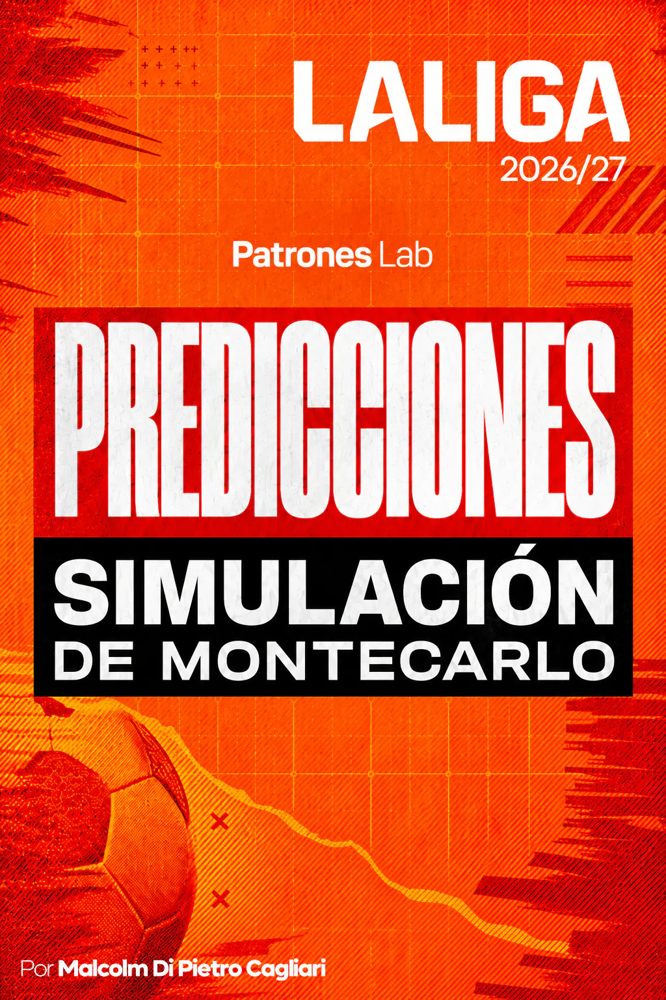

खेल विश्लेषण · प्रोजेक्ट 15

प्रोजेक्ट 18 · फ़ुटबॉल विश्लेषण
मोंटे कार्लो सिमुलेशन · ला लीगा 2026/27 के अनुमान
ला लीगा 2026/27 के 10 लाख परिदृश्यों में एलो रेटिंग और डेविडसन मॉडल से मेज़बान की जीत, ड्रॉ व मेहमान की जीत की संभावनाएँ निकलती हैं। इनसे ख़िताब, शीर्ष चार, रेलिगेशन और सीज़न के अंतिम अंक व रैंक का अनुमान लगता है।
पृष्ठभूमि और उद्देश्य
परियोजना ला लीगा 2026/27 की 20 टीमों की संभावित अंतिम तालिका का अध्ययन करती है। मैचवार संभावनाओं से सीज़न का सिमुलेशन होता है, ख़ास तौर पर ख़िताब, शीर्ष चार और रेलिगेशन के लिए।
ऐतिहासिक डेटा में ला लीगा के 2021/22 से 2024/25 तक के मैच और मैच से पहले की एलो रेटिंग हैं। प्रतिद्वंद्वियों के एलो अंतर को मेज़बान की जीत, ड्रॉ और मेहमान की जीत की आवृत्ति से जोड़ा जाता है। इसी पर डेविडसन मॉडल घरेलू बढ़त और ड्रॉ की सामान्य प्रवृत्ति समेत समायोजित होता है।
हर अपडेट में ला लीगा 2026/27 का कार्यक्रम, दर्ज नतीजे और नई एलो रेटिंग शामिल हैं। अर्जित अंक तालिका में बने रहते हैं। बाकी मैचों के सिमुलेशन से अंतिम अंकों, रैंक और क्वालिफ़ाई करने की संभावना का बंटन निकलता है।
मॉडल और सिमुलेशन
डेटा और एलो रेटिंग की तैयारी
ला लीगा के पुराने नतीजे तैयार करते हुए तारीखें, टीमें, घरेलू या बाहरी मैदान, गोल और नतीजे जाँचे गए। चार पूरे सीज़न के 1,520 मैचों से नतीजों और रेटिंग के लिए एक समान आधार मिला।
एलो रेटिंग हर टीम की सापेक्ष ताकत बताती है। हर मैच में मेज़बान की रेटिंग से मेहमान की रेटिंग घटती है। धनात्मक अंतर मेज़बान और ऋणात्मक अंतर मेहमान के पक्ष में है। यही मॉडल का मुख्य इनपुट है।
एलो रेटिंग का अंतर
\Delta Elo = Elo_{L}-Elo_{V}
घरेलू और मेहमान टीम की एलो रेटिंग का अंतर मैदान का असर जोड़ने से पहले की शुरुआती बढ़त बताता है।
शुरुआती पैरामीटर 2021/22 से 2023/24 के सीज़नों पर निकले। 2024/25 को समय-आधारित सत्यापन के लिए रखकर अनुमान वास्तविक नतीजों से मिलाए गए। फिर चारों सीज़न पर मॉडल दोबारा बना और उसके पैरामीटर 2026/27 पर लागू हुए।
डेविडसन मॉडल से मैच की संभावनाएँ
डेविडसन मॉडल एलो अंतर से मेज़बान की जीत, ड्रॉ और मेहमान की जीत की संभावनाएँ निकालता है। पुराने नतीजों के लिए दो पैरामीटर चुने जाते हैं: H घरेलू मैदान का असर और ν ड्रॉ की आवृत्ति बताता है। हर मैच के वास्तविक नतीजे से अधिकतम संभाव्यता विधि द्वारा उनका अनुमान लगता है।
पहले एलो अंतर और घरेलू लाभ मिलाकर मेहमान की तुलना में मेज़बान की सापेक्ष ताकत निकलती है। मॉडल के सूत्र इस मान से तीनों नतीजों में संभावना बाँटते हैं।
मेज़बान टीम की सापेक्ष ताकत
r = 10^{(\Delta Elo+H)/400}
r मेज़बान की सापेक्ष ताकत, ΔElo रेटिंग का अंतर और H घरेलू लाभ का अनुमानित पैरामीटर है। रूपांतरण एलो रेटिंग का पैमाना बनाए रखता है।
मेज़बान की जीत, ड्रॉ और मेहमान की जीत
P(L)=\frac{r}{r+1+\nu\sqrt{r}}
P(E)=\frac{\nu\sqrt{r}}{r+1+\nu\sqrt{r}}
P(V)=\frac{1}{r+1+\nu\sqrt{r}}
P(L), P(E) और P(V) मेज़बान की जीत, ड्रॉ और मेहमान की जीत की संभावनाएँ हैं। ν सीधे ड्रॉ की संभावना को प्रभावित करता है। हर मैच में तीनों का जोड़ 1 है।
2024/25 के सत्यापन में सबसे संभावित नतीजे की सटीकता, लॉग-लॉस और ब्रायर स्कोर देखे गए। हर नतीजे की औसत संभावना की तुलना उसकी देखी गई आवृत्ति और ऐतिहासिक आवृत्ति के आधार से हुई। फिर चारों सीज़न पर पैरामीटर दोबारा निकाले गए और मौजूदा सीज़न के अनुमानों में स्थिर रखे गए।
ला लीगा का मोंटे कार्लो सिमुलेशन
ला लीगा में 20 टीमें और 380 मैच हैं। हर अपडेट में खेले गए मैचों के वास्तविक नतीजे रखे जाते हैं और बाकी का सिमुलेशन डेविडसन संभावनाओं से होता है। हर सिमुलेटेड मैच में अपनी संभावनाओं के अनुसार मेज़बान जीतता है, ड्रॉ होता है या मेहमान जीतता है।
जीत पर तीन और ड्रॉ पर एक अंक मिलता है। सिमुलेशन के अंक मौजूदा अंकों में जोड़कर हर बार अंतिम तालिका बनती है। बराबर अंक वाली टीमों की रैंक के अनुमान के लिए टाई यादृच्छिक रूप से तोड़ी जाती है।
हर टीम के अंतिम अंक
\text{अंक}_{i}^{\text{अंतिम}}=\text{अंक}_{i}^{\text{वर्तमान}}+\text{अंक}_{i}^{\text{सिमुलेटेड}}
हर टीम के अंतिम अंक उसके मौजूदा अंक और उस सिमुलेशन के बाकी मैचों में मिले अंकों का जोड़ हैं।
प्रक्रिया 10 लाख बार चलती है और हर सीज़न की पूरी तालिका बनती है। गिना जाता है कि टीम कितनी बार चैंपियन रही, शीर्ष चार में पहुँची या रेलिगेशन के तीन स्थानों में रही। इन आवृत्तियों से संभावनाएँ निकलती हैं।
सिमुलेशन से अनुमानित संभावना
\widehat{P}(A)=\frac{N_A}{N}
N=1\,000\,000
N कुल सिमुलेशन है और Nₐ वह संख्या है जिनमें घटना हुई। इनके अनुपात से ख़िताब, शीर्ष चार या रेलिगेशन जैसी घटनाओं की संभावना आँकी जाती है।
अंकों और रैंक के पूरे मैट्रिक्स रखे जाते हैं ताकि सबसे आम रैंक, बंटन का फैलाव, टीमों के अंकों का अंतर और निर्णायक स्थानों से जुड़े अंक समझे जा सकें।
अंतिम प्रस्तुति और सीख
20 टीमों में से हर एक के लिए ख़िताब, शीर्ष चार और रेलिगेशन की संभावना के साथ अपेक्षित अंक और रैंक निकाली जाती है। अंतिम रैंक का पूरा बंटन, मध्यिका और प्रतिशतक दिखाते हैं कि सिमुलेटेड सीज़नों में नतीजे कितने बदलते हैं।
बाकी मैचों में मेज़बान की जीत, ड्रॉ और मेहमान की जीत की संभावनाएँ निकाली जाती हैं। पूरे सीज़न के लिए सामान्य अंक सीमा, हर रैंक की संभावना और विजेता, चौथे स्थान व रेलिगेशन से जुड़े अंकों के संदर्भ दिए जाते हैं। टीमों की सीधी तुलना भी होती है।
हर अपडेट में ला लीगा के नए नतीजे और एलो रेटिंग लेकर बाकी मैचों की संभावनाएँ फिर निकाली जाती हैं और सिमुलेशन दोहराया जाता है। तारीख के अनुसार रखे नतीजों से हर मैचदिवस पर बदलते अनुमान देखे जा सकते हैं।
परियोजना में डेटा की तैयारी और जाँच, एलो रेटिंग, डेविडसन से मैच की संभावनाएँ और सीज़न का सिमुलेशन शामिल हैं। नए मैच जुड़ने पर अनुमान अपडेट होते हैं और अंकों व रैंक के केंद्रीय मान के साथ उनका फैलाव भी दिखता है।